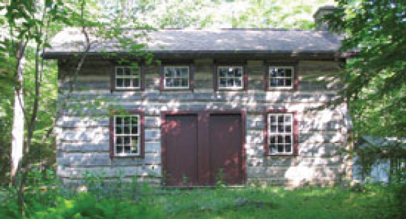

About Our Programs
Eagles Mere Conservancy Programs are open to all members and non-members. All children five and under must be accompanied by an adult. Alternative programs will be planned if it rains. Please be on time! All programs begin at The Cabin unless otherwise stated.
Cabin Programs
Summer is a lively time in Eagles Mere. From late June to early September the Conservancy provides dynamic educational programs. For over twenty-five years our naturalists have interacted with the children and teens of Eagles Mere. Activities such as the Pond Poke, building Gnome Homes and the Bug Olympics, have become a tradition passed on from generation to generation. Adults are included in our cabin programs as well. Astronomy Night is a special family event that we all look forward to. We invite you to visit our cabin site see what other fun activities are in store for the summer.
Evening Programs
We depart from the Outlet Pond at 9:30 AM (for those events where we will drive north on 42 to either 154 or 220, we will meet hikers from Laporte & World’s End State Park at the junction of 154 & 220 at ~9:40). Unless otherwise noted, be prepared with water, lunch, sturdy shoes, & proper clothing (such as long pants due to briers & stinging nettles). Families encouraged to participate – children must be accompanied by an adult. On some hikes there may be rough terrain & bushwhacking where there is no blazed trail (so identified in hike description).
Hike lengths and elevation change over 150 ft. are estimated for each hike. Afternoon return time will depend on hike length and/or driving distances.
Our Trail Network
Click here to download trailmap for the Eagles Mere Conservancy’s Trail Network.
Click here to download trailmap for Forest Park and its history.
Special Programs
Eagles Mere is a special place that has a unique ambience and beautiful, yet fragile, surroundings, which the Conservancy is committed to preserving. Issues arise from time to time that could impact our beautiful area such as the Woolly Adelgid attacking our hemlock trees or the need for reforestation. The Eagles Mere Conservancy provides evening venues for information and discussion regarding these issues and others that may emerge.

Support the EMC

2015 Newsletter

Cabin Programs
To Reach the Conservancy:
Telephone:
Cabin: 570-525-3725
Office: 570-525-3385
Email:
info@eaglesmereconservancy.org
Cabin Hours:
Monday-Saturday: 9:30am-4:00pm
Sunday: Closed
Event Calendar